Избранные работы · Addanapp
Продукты, которые я создал и запустил.
Подборка работающих продуктов, созданных мной с Addanapp: от бизнес-платформ до обучающих приложений и игр. Откройте любую карточку, чтобы попробовать.
Все 60 приложений → Полное портфолио на Addanapp ↗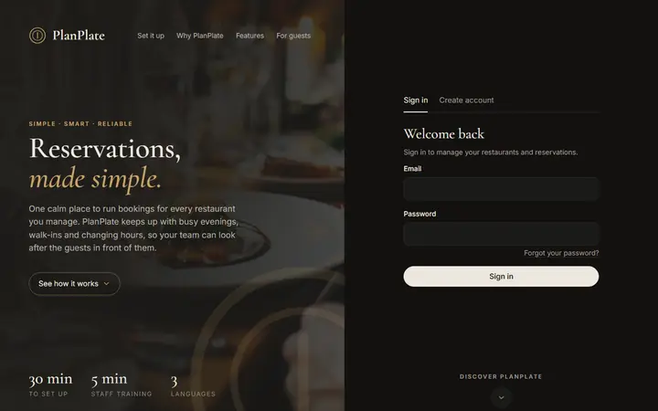
PlanPlate
Платформа бронирования и контента. Команды ресторанов управляют бронями во всех заведениях; гости бронируют прямо на сайте каждого ресторана.
Открыть PlanPlate ↗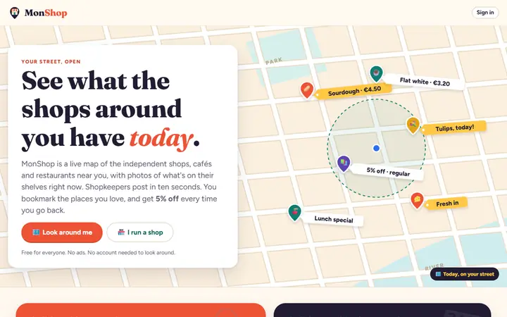
MonShop
Местные продавцы публикуют новинки и спецпредложения; покупатели находят то, что рядом, на живой карте района.
Открыть MonShop ↗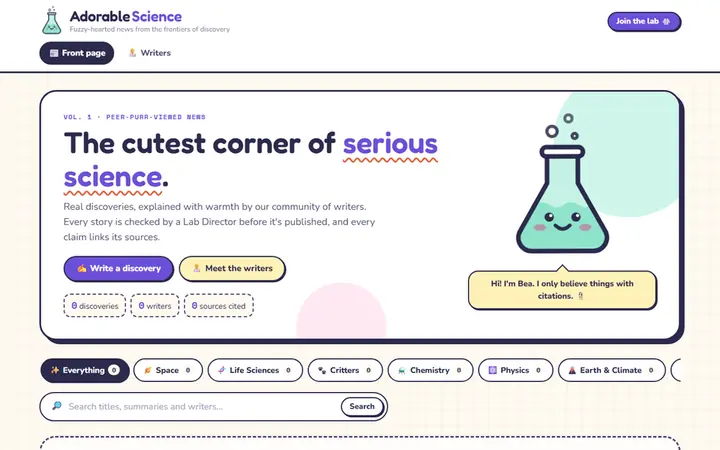
Adorable Science
Научный блог для многих авторов с настоящим редакционным процессом: авторы пишут, редакторы проверяют, а посты выходят только после одобрения.
Открыть Adorable Science ↗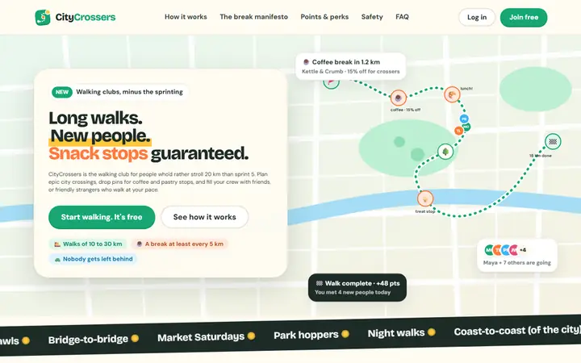
CityCrossers
Найдите группу для прогулок, проложите маршрут с перекусами и познакомьтесь с людьми, готовыми к долгим прогулкам по городу.
Открыть CityCrossers ↗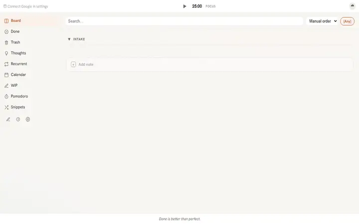
Varnote
Ставьте #теги прямо в заметках, а затем одним нажатием сужайте большую коллекцию до нужной заметки.
Открыть Varnote ↗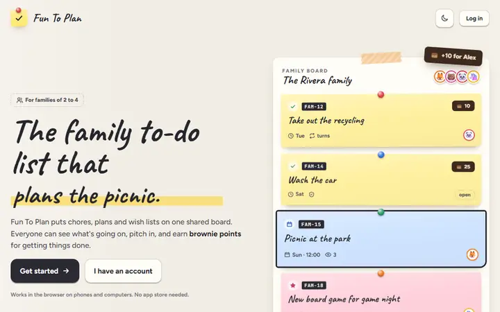
FunToPlan
Превратите домашние дела в дружескую игру: родители ставят задачи, дети зарабатывают баллы, и все видят счёт недели.
Открыть FunToPlan ↗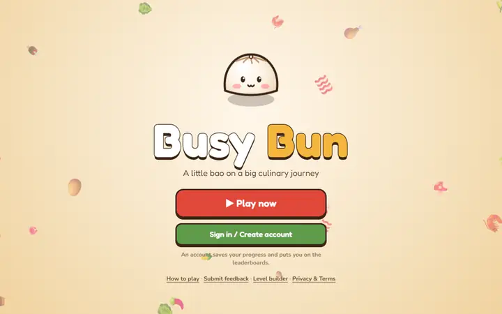
BusyBun
Игровая охота за ингредиентами для паровых булочек. Выполняйте поручения, гоняйте вредителей и наполняйте булочку на 18 уровнях, сделанных вручную.
Играть в BusyBun ↗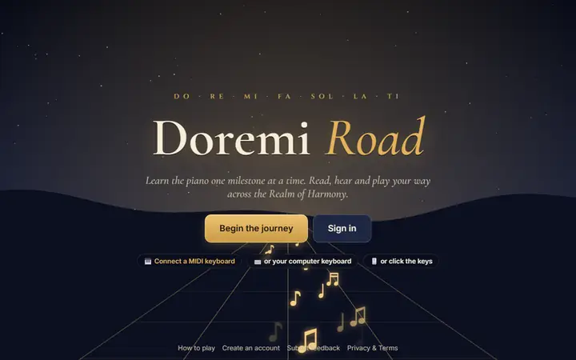
DoremiRoad
Изучайте теорию музыки, исследуя карту. Играйте на MIDI-клавиатуре, клавиатуре компьютера или сенсорном экране.
Играть в DoremiRoad ↗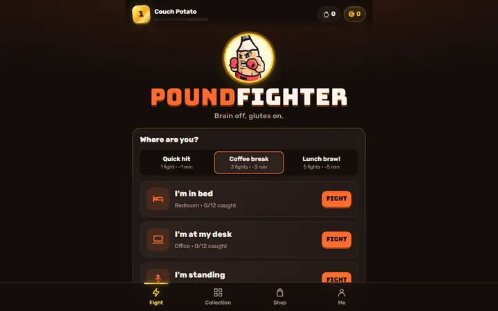
PoundFighter
Превратите микротренировки в битвы с монстрами. Считайте повторы рыком, хлопком или громким «ХОП!»
Попробовать PoundFighter ↗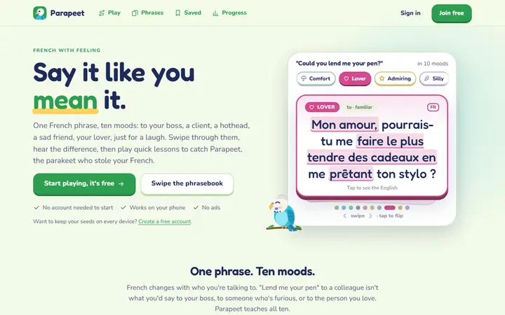
Parapeet
Практикуйте французский в повседневных ситуациях: от заказа в кафе до разговора с соседями.
Открыть Parapeet ↗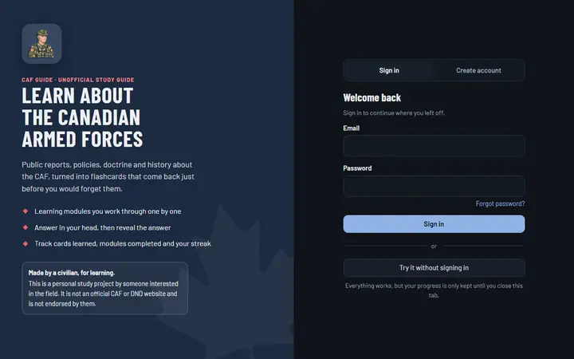
CAF Guide
Узнайте о званиях, структуре, истории и культуре Вооружённых сил Канады с помощью коротких тестов для телефона.
Открыть CAF Guide ↗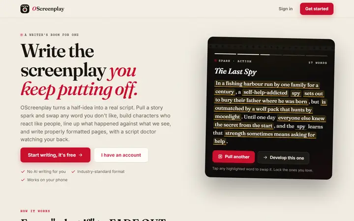
OScreenplay
Студия сценариев, где можно развить идею, создать персонажей и писать правильно оформленные страницы с отзывами о сюжете по ходу работы.
Открыть OScreenplay ↗Идея застряла?
Найдём следующий практический шаг.
Расскажите, что вы хотите создать или где ломается текущий процесс. Вместе решим, с чего начать.
Поговорим ↗